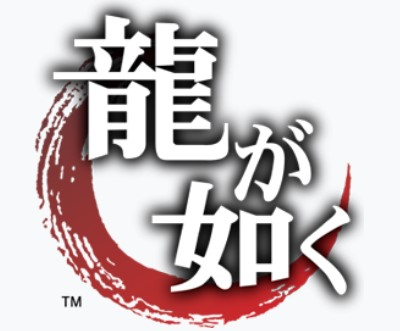
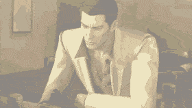
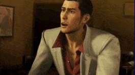
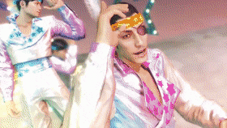
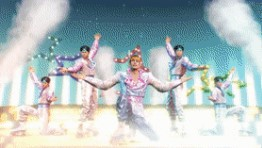
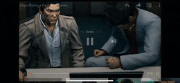
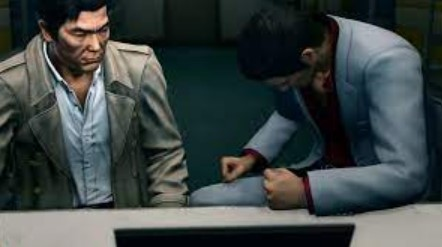
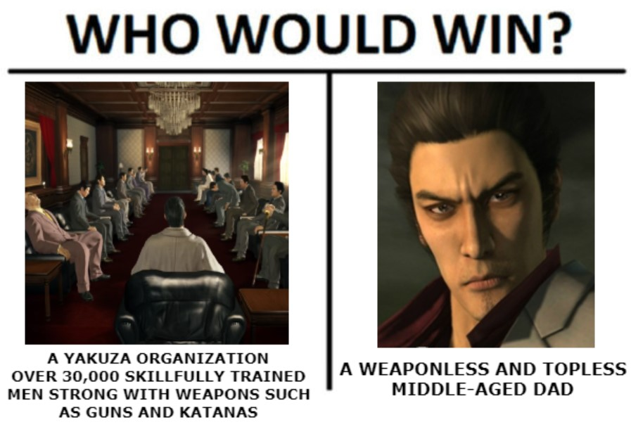
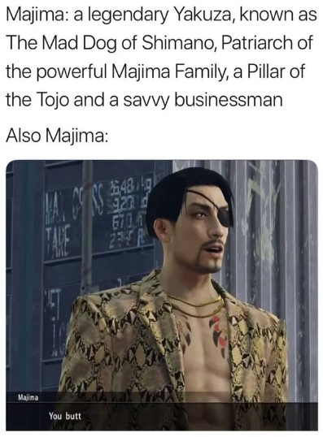

Yakuza Game Series
Synopsis
The Yakuza Series revolves around Kazuma Kiryu, a memeber of the Tojo clan located in Kamurocho, Japan. The games follow several character's battles in the struggle for power, money, and revenge.
Other Original Playable Characters
Memes







